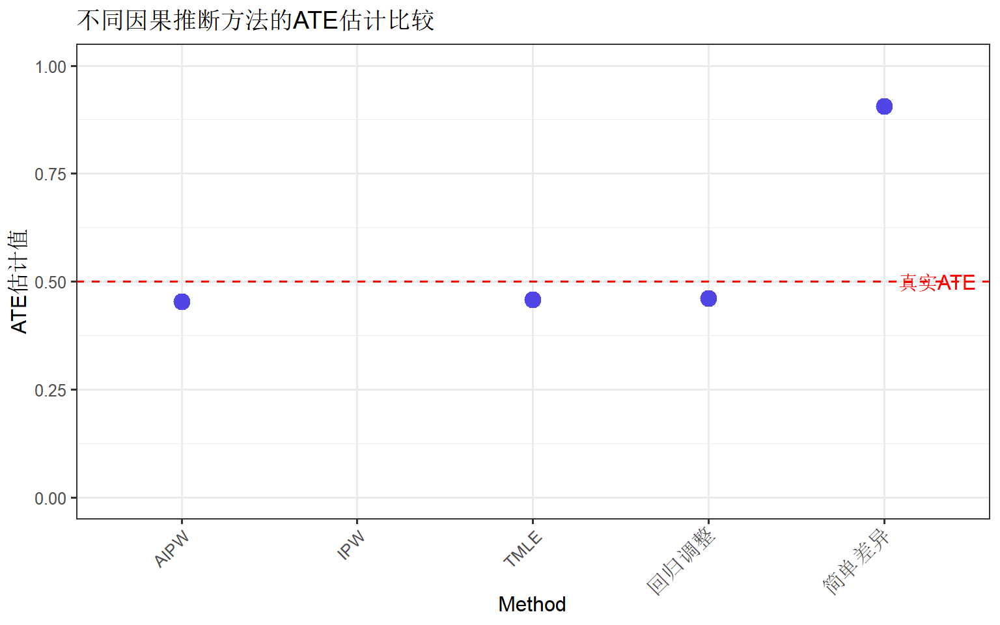
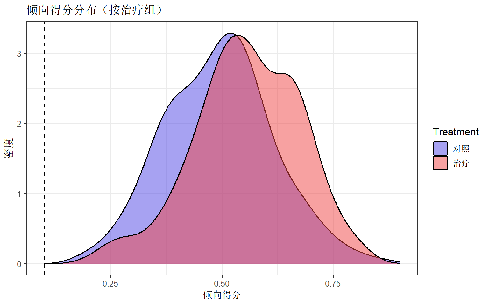

library(tmle)
library(SuperLearner)
library(ggplot2)
library(dplyr)
theme_set(theme_bw(base_size = 12))CausalImpact 时间序列因果分析
R语言方法
因果推断
时间序列
TMLE 简介
TMLE（Targeted Maximum Likelihood Estimation，目标最大似然估计）是一种半参数双重稳健的因果推断方法，结合了机器学习的灵活性和统计推断的严谨性。
为什么需要TMLE？
| 方法 | 局限性 | TMLE优势 |
|---|---|---|
| 传统回归 | 模型误设导致偏差 | 双重稳健 |
| IPW | 极端权重不稳定 | 边界处理 |
| 倾向得分匹配 | 样本量损失 | 保留所有数据 |
| 参数模型 | 假设过强 | 可整合ML |
双重稳健性
TMLE的核心优势是双重稳健性：只要以下两个模型之一正确指定，估计就是一致的： - 结果模型 Q(A,W)：给定暴露和协变量下的期望结果 - 倾向得分模型 g(W)：给定协变量下接受暴露的概率
安装与加载
第一部分：TMLE理论基础
因果效应参数
TMLE常用于估计平均治疗效应（ATE）：
\[ATE = E[Y(1)] - E[Y(0)]\]
其中 Y(1) 和 Y(0) 分别是接受和不接受治疗的潜在结果。
TMLE步骤
- 初始估计：拟合结果模型 Q⁰(A,W)
- 倾向得分：拟合暴露模型 g(W)
- 目标更新：使用巧妙协变量调整初始估计
- 参数估计：计算目标参数的样本均值
与AIPW的关系
AIPW（增广逆概率加权）与TMLE同属双重稳健估计量，但TMLE通过目标更新步骤确保估计始终在合理范围内（如概率在0-1之间）。
第二部分：tmle包基础
数据准备
# 模拟观察性研究数据
set.seed(42)
n <- 500
# 协变量
W1 <- rnorm(n)
W2 <- rbinom(n, 1, 0.5)
W3 <- rnorm(n)
# 暴露（受协变量影响）
prob_A <- plogis(0.2 + 0.5 * W1 - 0.3 * W2 + 0.2 * W3)
A <- rbinom(n, 1, prob_A)
# 结果（受协变量和暴露影响）
Y <- 2 + 0.5 * A + 0.8 * W1 - 0.5 * W2 + 0.3 * W3 + rnorm(n, 0, 1)
# 构建数据框
obs_data <- data.frame(Y = Y, A = A, W1 = W1, W2 = W2, W3 = W3)
head(obs_data) Y A W1 W2 W3
1 2.012966 1 1.3709584 1 -1.6080602
2 1.327490 1 -0.5646982 0 -1.9497838
3 1.201020 1 0.3631284 1 -0.3406999
4 3.390633 1 0.6328626 1 0.1747255
5 1.345022 1 0.4042683 0 -2.2777776
6 2.842722 1 -0.1061245 0 0.2905245基础TMLE估计
# 准备协变量矩阵
W <- obs_data[, c("W1", "W2", "W3")]
# 运行TMLE
result <- tmle(
Y = obs_data$Y, # 结果变量
A = obs_data$A, # 暴露变量
W = W, # 协变量
family = "gaussian" # 结果类型
)Error : Loading required package dbarts failedError : Loading required package dbarts failedError : Loading required package dbarts failedError : Loading required package dbarts failedError : Loading required package dbarts failedError : Loading required package dbarts failedError : Loading required package dbarts failedError : Loading required package dbarts failedError : Loading required package dbarts failedError : Loading required package dbarts failedError : Loading required package dbarts failedError : Loading required package dbarts failedError : Loading required package dbarts failedError : Loading required package dbarts failedError : Loading required package dbarts failedError : Loading required package dbarts failedError : Loading required package dbarts failedError : Loading required package dbarts failedError : Loading required package dbarts failedError : Loading required package dbarts failedError : Loading required package dbarts failedError : Loading required package dbarts failed# 查看结果
summary(result) Initial estimation of Q
Procedure: cv-SuperLearner, ensemble
Model:
Y ~ SL.glm_All + tmle.SL.dbarts2_All + SL.glmnet_All
Coefficients:
SL.glm_All 0.5695964
tmle.SL.dbarts2_All 0
SL.glmnet_All 0.4304036
Cross-validated R squared : 0.4817
Estimation of g (treatment mechanism)
Procedure: SuperLearner, ensemble
Model:
A ~ SL.glm_All + tmle.SL.dbarts.k.5_All + SL.gam_All
Coefficients:
SL.glm_All 0.3871976
tmle.SL.dbarts.k.5_All 0
SL.gam_All 0.6128024
Estimation of g.Z (intermediate variable assignment mechanism)
Procedure: No intermediate variable
Estimation of g.Delta (missingness mechanism)
Procedure: No missingness, ensemble
Bounds on g: (0.036, 1)
Bounds on g for ATT/ATC: (0.036, 0.964)
Marginal Mean under Treatment (EY1)
Parameter Estimate: 2.2511
Estimated Variance: 0.0056543
p-value: <2e-16
95% Conf Interval: (2.1037, 2.3985)
Marginal Mean under Comparator (EY0)
Parameter Estimate: 1.7934
Estimated Variance: 0.0063488
p-value: <2e-16
95% Conf Interval: (1.6372, 1.9496)
Additive Effect
Parameter Estimate: 0.45772
Estimated Variance: 0.0087251
p-value: 9.5734e-07
95% Conf Interval: (0.27464, 0.6408)
Additive Effect among the Treated
Parameter Estimate: 0.4449
Estimated Variance: 0.0090505
p-value: 2.9176e-06
95% Conf Interval: (0.25844, 0.63136)
Additive Effect among the Controls
Parameter Estimate: 0.47558
Estimated Variance: 0.0096763
p-value: 1.3337e-06
95% Conf Interval: (0.28278, 0.66838)结果解读
# 提取ATE估计
ate <- result$estimates$ATE
cat("平均治疗效应 (ATE):\n")平均治疗效应 (ATE):cat(" 点估计:", round(ate$psi, 4), "\n") 点估计: 0.4577 cat(" 95% CI: [", round(ate$CI[1], 4), ",", round(ate$CI[2], 4), "]\n") 95% CI: [ 0.2746 , 0.6408 ]cat(" P值:", round(ate$pvalue, 4), "\n") P值: 0 第三部分：结合SuperLearner
TMLE的真正威力在于与机器学习集成。SuperLearner是一个集成学习框架，可以组合多种算法。
指定学习算法
# 定义SuperLearner库
SL_library <- c("SL.glm", "SL.glm.interaction", "SL.mean")
# 使用SuperLearner的TMLE
result_sl <- tmle(
Y = obs_data$Y,
A = obs_data$A,
W = W,
family = "gaussian",
Q.SL.library = SL_library, # 结果模型
g.SL.library = SL_library # 暴露模型
)
summary(result_sl) Initial estimation of Q
Procedure: cv-SuperLearner, ensemble
Model:
Y ~ SL.glm_All + SL.glm.interaction_All + SL.mean_All
Coefficients:
SL.glm_All 0.9957924
SL.glm.interaction_All 0
SL.mean_All 0.004207594
Cross-validated R squared : 0.4834
Estimation of g (treatment mechanism)
Procedure: SuperLearner, ensemble
Model:
A ~ SL.glm_All + SL.glm.interaction_All + SL.mean_All
Coefficients:
SL.glm_All 0.9310662
SL.glm.interaction_All 0
SL.mean_All 0.06893379
Estimation of g.Z (intermediate variable assignment mechanism)
Procedure: No intermediate variable
Estimation of g.Delta (missingness mechanism)
Procedure: No missingness, ensemble
Bounds on g: (0.036, 1)
Bounds on g for ATT/ATC: (0.036, 0.964)
Marginal Mean under Treatment (EY1)
Parameter Estimate: 2.2484
Estimated Variance: 0.0055793
p-value: <2e-16
95% Conf Interval: (2.102, 2.3948)
Marginal Mean under Comparator (EY0)
Parameter Estimate: 1.795
Estimated Variance: 0.0063041
p-value: <2e-16
95% Conf Interval: (1.6394, 1.9506)
Additive Effect
Parameter Estimate: 0.45338
Estimated Variance: 0.0085484
p-value: 9.4086e-07
95% Conf Interval: (0.27216, 0.63459)
Additive Effect among the Treated
Parameter Estimate: 0.44014
Estimated Variance: 0.0089029
p-value: 3.0906e-06
95% Conf Interval: (0.25521, 0.62507)
Additive Effect among the Controls
Parameter Estimate: 0.4676
Estimated Variance: 0.0092589
p-value: 1.1769e-06
95% Conf Interval: (0.279, 0.65619)使用更复杂的算法库
# 更丰富的算法库（需要安装相应包）
SL_library_full <- c(
"SL.glm",
"SL.glm.interaction",
"SL.step",
"SL.mean"
)
result_full <- tmle(
Y = obs_data$Y,
A = obs_data$A,
W = W,
family = "gaussian",
Q.SL.library = SL_library_full,
g.SL.library = SL_library_full
)
cat("\n使用扩展SuperLearner库的结果:\n")
使用扩展SuperLearner库的结果:summary(result_full) Initial estimation of Q
Procedure: cv-SuperLearner, ensemble
Model:
Y ~ SL.glm_All + SL.glm.interaction_All + SL.step_All + SL.mean_All
Coefficients:
SL.glm_All 0.7876579
SL.glm.interaction_All 0.2039826
SL.step_All 0
SL.mean_All 0.008359432
Cross-validated R squared : 0.4821
Estimation of g (treatment mechanism)
Procedure: SuperLearner, ensemble
Model:
A ~ SL.glm_All + SL.glm.interaction_All + SL.step_All + SL.mean_All
Coefficients:
SL.glm_All 0.8933107
SL.glm.interaction_All 0
SL.step_All 0
SL.mean_All 0.1066893
Estimation of g.Z (intermediate variable assignment mechanism)
Procedure: No intermediate variable
Estimation of g.Delta (missingness mechanism)
Procedure: No missingness, ensemble
Bounds on g: (0.036, 1)
Bounds on g for ATT/ATC: (0.036, 0.964)
Marginal Mean under Treatment (EY1)
Parameter Estimate: 2.2495
Estimated Variance: 0.0055429
p-value: <2e-16
95% Conf Interval: (2.1036, 2.3954)
Marginal Mean under Comparator (EY0)
Parameter Estimate: 1.7925
Estimated Variance: 0.0062482
p-value: <2e-16
95% Conf Interval: (1.6375, 1.9474)
Additive Effect
Parameter Estimate: 0.45701
Estimated Variance: 0.0084877
p-value: 7.028e-07
95% Conf Interval: (0.27644, 0.63758)
Additive Effect among the Treated
Parameter Estimate: 0.44577
Estimated Variance: 0.0087866
p-value: 1.979e-06
95% Conf Interval: (0.26205, 0.62949)
Additive Effect among the Controls
Parameter Estimate: 0.47176
Estimated Variance: 0.0091523
p-value: 8.1686e-07
95% Conf Interval: (0.28426, 0.65927)第四部分：二分类结果
风险差、风险比和优势比
# 创建二分类结果
Y_binary <- ifelse(obs_data$Y > median(obs_data$Y), 1, 0)
# 二分类TMLE
result_binary <- tmle(
Y = Y_binary,
A = obs_data$A,
W = W,
family = "binomial"
)Error : Loading required package dbarts failedError : Loading required package dbarts failedError : Loading required package dbarts failedError : Loading required package dbarts failedError : Loading required package dbarts failedError : Loading required package dbarts failedError : Loading required package dbarts failedError : Loading required package dbarts failedError : Loading required package dbarts failedError : Loading required package dbarts failedError : Loading required package dbarts failedError : Loading required package dbarts failedError : Loading required package dbarts failedError : Loading required package dbarts failedError : Loading required package dbarts failedError : Loading required package dbarts failedError : Loading required package dbarts failedError : Loading required package dbarts failedError : Loading required package dbarts failedError : Loading required package dbarts failedError : Loading required package dbarts failedError : Loading required package dbarts failedsummary(result_binary) Initial estimation of Q
Procedure: cv-SuperLearner, ensemble
Model:
Y ~ SL.glm_All + tmle.SL.dbarts2_All + SL.glmnet_All
Coefficients:
SL.glm_All 1
tmle.SL.dbarts2_All 0
SL.glmnet_All 0
Cross-validated pseudo R squared : 0.2631
Estimation of g (treatment mechanism)
Procedure: SuperLearner, ensemble
Model:
A ~ SL.glm_All + tmle.SL.dbarts.k.5_All + SL.gam_All
Coefficients:
SL.glm_All 1
tmle.SL.dbarts.k.5_All 0
SL.gam_All 0
Estimation of g.Z (intermediate variable assignment mechanism)
Procedure: No intermediate variable
Estimation of g.Delta (missingness mechanism)
Procedure: No missingness, ensemble
Bounds on g: (0.036, 1)
Bounds on g for ATT/ATC: (0.036, 0.964)
Marginal Mean under Treatment (EY1)
Parameter Estimate: 0.55592
Estimated Variance: 0.0008165
p-value: <2e-16
95% Conf Interval: (0.49991, 0.61192)
Marginal Mean under Comparator (EY0)
Parameter Estimate: 0.42854
Estimated Variance: 0.00090026
p-value: <2e-16
95% Conf Interval: (0.36973, 0.48735)
Additive Effect
Parameter Estimate: 0.12737
Estimated Variance: 0.0014383
p-value: 0.00078342
95% Conf Interval: (0.053042, 0.2017)
Additive Effect among the Treated
Parameter Estimate: 0.13582
Estimated Variance: 0.0014258
p-value: 0.00032184
95% Conf Interval: (0.061815, 0.20983)
Additive Effect among the Controls
Parameter Estimate: 0.11806
Estimated Variance: 0.0015509
p-value: 0.0027195
95% Conf Interval: (0.040871, 0.19524)
Relative Risk
Parameter Estimate: 1.2972
Variance(log scale): 0.0063751
p-value: 0.0011174
95% Conf Interval: (1.1093, 1.517)
Odds Ratio
Parameter Estimate: 1.6693
Variance(log scale): 0.023802
p-value: 0.00089605
95% Conf Interval: (1.2337, 2.2587)提取各类效应量
# 风险差 (Risk Difference)
rd <- result_binary$estimates$ATE
cat(
"风险差 (RD):", round(rd$psi, 4),
"95% CI [", round(rd$CI[1], 4), ",", round(rd$CI[2], 4), "]\n"
)风险差 (RD): 0.1274 95% CI [ 0.053 , 0.2017 ]# 风险比 (Relative Risk)
rr <- result_binary$estimates$RR
cat(
"风险比 (RR):", round(rr$psi, 4),
"95% CI [", round(rr$CI[1], 4), ",", round(rr$CI[2], 4), "]\n"
)风险比 (RR): 1.2972 95% CI [ 1.1093 , 1.517 ]# 优势比 (Odds Ratio)
or <- result_binary$estimates$OR
cat(
"优势比 (OR):", round(or$psi, 4),
"95% CI [", round(or$CI[1], 4), ",", round(or$CI[2], 4), "]\n"
)优势比 (OR): 1.6693 95% CI [ 1.2337 , 2.2587 ]第五部分：AIPW估计量
AIPW（Augmented Inverse Probability Weighting）是另一种双重稳健估计方法。
手动实现AIPW
# AIPW估计函数
estimate_aipw <- function(Y, A, W) {
# 拟合倾向得分模型
ps_model <- glm(A ~ ., data = cbind(A = A, W), family = binomial)
ps <- predict(ps_model, type = "response")
# 拟合结果模型
outcome_model <- lm(Y ~ A + ., data = cbind(Y = Y, A = A, W))
# 预测潜在结果
W_A1 <- cbind(A = 1, W)
W_A0 <- cbind(A = 0, W)
Q1 <- predict(outcome_model, newdata = W_A1)
Q0 <- predict(outcome_model, newdata = W_A0)
# AIPW估计量
aipw1 <- mean(Q1 + A / ps * (Y - Q1))
aipw0 <- mean(Q0 + (1 - A) / (1 - ps) * (Y - Q0))
ate_aipw <- aipw1 - aipw0
# 影响函数用于方差估计
IF <- (Q1 - Q0) + A / ps * (Y - Q1) - (1 - A) / (1 - ps) * (Y - Q0) - ate_aipw
se <- sqrt(var(IF) / length(Y))
list(
ATE = ate_aipw,
SE = se,
CI = c(ate_aipw - 1.96 * se, ate_aipw + 1.96 * se)
)
}
# 计算AIPW估计
aipw_result <- estimate_aipw(obs_data$Y, obs_data$A, W)
cat("\nAIPW 估计结果:\n")
AIPW 估计结果:cat(" ATE:", round(aipw_result$ATE, 4), "\n") ATE: 0.453 cat(" SE:", round(aipw_result$SE, 4), "\n") SE: 0.0928 cat(
" 95% CI: [", round(aipw_result$CI[1], 4), ",",
round(aipw_result$CI[2], 4), "]\n"
) 95% CI: [ 0.2711 , 0.6348 ]第六部分：方法比较
多种估计方法对比
# 1. 简单差异
simple_diff <- mean(obs_data$Y[obs_data$A == 1]) -
mean(obs_data$Y[obs_data$A == 0])
# 2. 回归调整
reg_model <- lm(Y ~ A + W1 + W2 + W3, data = obs_data)
reg_ate <- coef(reg_model)["A"]
# 3. IPW
ps_model <- glm(A ~ W1 + W2 + W3, data = obs_data, family = binomial)
ps <- predict(ps_model, type = "response")
weights <- obs_data$A / ps + (1 - obs_data$A) / (1 - ps)
ipw_ate <- weighted.mean(
obs_data$Y * (2 * obs_data$A - 1),
weights * (2 * obs_data$A - 1)
)
# 4. TMLE
tmle_ate <- result$estimates$ATE$psi
# 5. AIPW
aipw_ate <- aipw_result$ATE
# 汇总比较
comparison <- data.frame(
Method = c("简单差异", "回归调整", "IPW", "AIPW", "TMLE"),
ATE = c(simple_diff, reg_ate, ipw_ate, aipw_ate, tmle_ate),
True = rep(0.5, 5) # 真实效应
)
# 可视化
ggplot(comparison, aes(x = Method, y = ATE)) +
geom_point(size = 4, color = "#4f46e5") +
geom_hline(yintercept = 0.5, linetype = "dashed", color = "red") +
annotate("text", x = 5.3, y = 0.5, label = "真实ATE", color = "red") +
labs(
title = "不同因果推断方法的ATE估计比较",
y = "ATE估计值"
) +
theme(axis.text.x = element_text(angle = 45, hjust = 1)) +
ylim(0, 1)
第七部分：诊断与检验
倾向得分诊断
# 倾向得分分布
ps_df <- data.frame(
PS = ps,
Treatment = factor(obs_data$A, labels = c("对照", "治疗"))
)
ggplot(ps_df, aes(x = PS, fill = Treatment)) +
geom_density(alpha = 0.5) +
scale_fill_manual(values = c("#4f46e5", "#ef4444")) +
labs(
title = "倾向得分分布（按治疗组）",
x = "倾向得分", y = "密度"
) +
geom_vline(xintercept = c(0.1, 0.9), linetype = "dashed")
正位性检查
# 检查极端倾向得分
cat("倾向得分统计:\n")倾向得分统计:cat(" 最小值:", round(min(ps), 4), "\n") 最小值: 0.1914 cat(" 最大值:", round(max(ps), 4), "\n") 最大值: 0.8601 cat(" PS < 0.05 的比例:", mean(ps < 0.05), "\n") PS < 0.05 的比例: 0 cat(" PS > 0.95 的比例:", mean(ps > 0.95), "\n") PS > 0.95 的比例: 0 第八部分：实战案例
完整工作流程
# 使用更接近真实的模拟数据
set.seed(123)
n <- 1000
# 模拟混杂结构
age <- rnorm(n, 50, 10)
gender <- rbinom(n, 1, 0.5)
bmi <- rnorm(n, 25, 4)
smoking <- rbinom(n, 1, plogis(-1 + 0.02 * age + 0.3 * gender))
# 治疗分配（受混杂影响）
prob_treat <- plogis(-2 + 0.03 * age - 0.5 * gender + 0.05 * bmi + 0.8 * smoking)
treatment <- rbinom(n, 1, prob_treat)
# 结果（受治疗和混杂影响）
outcome <- 50 - 5 * treatment + 0.3 * age - 2 * gender + 0.5 * bmi + 3 * smoking + rnorm(n, 0, 5)
case_data <- data.frame(
outcome = outcome,
treatment = treatment,
age = age,
gender = gender,
bmi = bmi,
smoking = smoking
)
cat("\n=== 数据概览 ===\n")
=== 数据概览 ===cat("样本量:", n, "\n")样本量: 1000 cat("治疗组比例:", mean(treatment), "\n")治疗组比例: 0.721 # TMLE分析
W_case <- case_data[, c("age", "gender", "bmi", "smoking")]
result_case <- tmle(
Y = case_data$outcome,
A = case_data$treatment,
W = W_case,
family = "gaussian",
Q.SL.library = c("SL.glm", "SL.glm.interaction"),
g.SL.library = c("SL.glm", "SL.glm.interaction")
)
cat("\n=== TMLE 结果 ===\n")
=== TMLE 结果 ===summary(result_case) Initial estimation of Q
Procedure: cv-SuperLearner, ensemble
Model:
Y ~ SL.glm_All + SL.glm.interaction_All
Coefficients:
SL.glm_All 1
SL.glm.interaction_All 0
Cross-validated R squared : 0.4189
Estimation of g (treatment mechanism)
Procedure: SuperLearner, ensemble
Model:
A ~ SL.glm_All + SL.glm.interaction_All
Coefficients:
SL.glm_All 1
SL.glm.interaction_All 0
Estimation of g.Z (intermediate variable assignment mechanism)
Procedure: No intermediate variable
Estimation of g.Delta (missingness mechanism)
Procedure: No missingness, ensemble
Bounds on g: (0.0229, 1)
Bounds on g for ATT/ATC: (0.0229, 0.9771)
Marginal Mean under Treatment (EY1)
Parameter Estimate: 73.101
Estimated Variance: 0.05401
p-value: <2e-16
95% Conf Interval: (72.646, 73.557)
Marginal Mean under Comparator (EY0)
Parameter Estimate: 77.915
Estimated Variance: 0.12937
p-value: <2e-16
95% Conf Interval: (77.21, 78.62)
Additive Effect
Parameter Estimate: -4.8134
Estimated Variance: 0.1447
p-value: <2e-16
95% Conf Interval: (-5.559, -4.0679)
Additive Effect among the Treated
Parameter Estimate: -4.8538
Estimated Variance: 0.16322
p-value: <2e-16
95% Conf Interval: (-5.6456, -4.062)
Additive Effect among the Controls
Parameter Estimate: -4.6613
Estimated Variance: 0.12896
p-value: <2e-16
95% Conf Interval: (-5.3651, -3.9574)cat("\n=== 真实效应 vs 估计效应 ===\n")
=== 真实效应 vs 估计效应 ===cat("真实 ATE: -5\n")真实 ATE: -5cat("TMLE ATE:", round(result_case$estimates$ATE$psi, 3), "\n")TMLE ATE: -4.813 cat("偏差:", round(result_case$estimates$ATE$psi - (-5), 3), "\n")偏差: 0.187 常用代码速查
# ===== 基础TMLE =====
library(tmle)
result <- tmle(Y = Y, A = A, W = W, family = "gaussian")
summary(result)
# ===== 提取结果 =====
result$estimates$ATE$psi # 点估计
result$estimates$ATE$CI # 置信区间
result$estimates$ATE$pvalue # P值
# ===== 二分类结果 =====
result <- tmle(Y = Y_binary, A = A, W = W, family = "binomial")
result$estimates$RR # 风险比
result$estimates$OR # 优势比
# ===== 使用SuperLearner =====
result <- tmle(
Y = Y, A = A, W = W,
Q.SL.library = c("SL.glm", "SL.ranger"),
g.SL.library = c("SL.glm", "SL.ranger")
)
# ===== AIPW（使用其他包） =====
# library(AIPW)
# aipw <- AIPW$new(Y, A, W, ...)小结
TMLE vs 其他方法：
| 特点 | TMLE | IPW | 回归 |
|---|---|---|---|
| 双重稳健 | ✅ | ❌ | ❌ |
| 整合ML | ✅ | 部分 | 部分 |
| 范围约束 | ✅ | ❌ | ❌ |
| 效率 | 高 | 较低 | 中 |
建议：在观察性研究中估计因果效应时，TMLE是首选方法，尤其当样本量较大且协变量较多时。
参考资源
{r setup, include=FALSE} knitr::opts_chunk$set( echo = TRUE, warning = FALSE, message = FALSE, fig.width = 10, fig.height = 6 )
CausalImpact 简介
CausalImpact 是Google开发的R包，使用贝叶斯结构时间序列模型来估计干预对时间序列的因果效应。它解决了一个核心问题：如果没有干预，会发生什么？
应用场景
| 领域 | 应用示例 |
|---|---|
| 公共卫生 | 政策实施对疾病发病率的影响 |
| 营销 | 广告活动对销售的影响 |
| 经济学 | 政策干预对经济指标的影响 |
| 产品 | 功能上线对用户行为的影响 |
核心原理
CausalImpact通过以下步骤工作： 1. 使用未受干预的对照序列预测干预后的反事实 2. 比较实际观测值与反事实预测 3. 量化差异并提供不确定性估计
安装与加载
library(CausalImpact)
library(ggplot2)
library(dplyr)
theme_set(theme_bw(base_size = 12))第一部分：基础用法
模拟数据创建
# 创建模拟时间序列数据
set.seed(42)
n <- 100 # 时间点数
intervention_point <- 70 # 干预发生点
# 生成对照序列（未受干预影响）
x1 <- 10 + arima.sim(model = list(ar = 0.8), n = n)
x2 <- 20 + arima.sim(model = list(ar = 0.7), n = n)
# 生成目标序列
# 干预前：与对照序列相关
# 干预后：增加效应
y <- 1.5 * x1 + 0.5 * x2 + rnorm(n, 0, 2)
# 添加干预效应
y[(intervention_point + 1):n] <- y[(intervention_point + 1):n] + 5
# 创建时间索引
time_points <- seq.Date(as.Date("2024-01-01"), by = "day", length.out = n)
# 组合数据
data <- zoo::zoo(cbind(y = y, x1 = x1, x2 = x2), time_points)
head(data)运行CausalImpact
# 定义干预前后时期
pre_period <- c(time_points[1], time_points[intervention_point])
post_period <- c(time_points[intervention_point + 1], time_points[n])
# 运行分析
impact <- CausalImpact(data, pre_period, post_period)
# 查看结果
summary(impact)结果可视化
# 默认三图面板
plot(impact)解读输出
# 获取报告
summary(impact, "report")第二部分：理解输出图形
三个面板解读
# 单独绘制每个面板
plot(impact, "original") # 原始数据 vs 反事实预测Original 面板： - 黑线：实际观测值 - 蓝色虚线：反事实预测（如果没有干预会发生什么） - 浅蓝区域：预测的95%置信区间
plot(impact, "pointwise") # 逐点效应Pointwise 面板： - 显示每个时间点的因果效应（实际 - 预测） - 效应在零线以上表示正向影响
plot(impact, "cumulative") # 累积效应Cumulative 面板： - 显示干预后的累积因果效应 - 用于评估总体影响
第三部分：关键结果解读
提取数值结果
# 获取摘要统计
impact_summary <- impact$summary
cat("=== 干预效应摘要 ===\n\n")
cat("平均因果效应:\n")
cat(" 绝对效应:", round(impact_summary$AbsEffect[1], 2), "\n")
cat(" 相对效应:", round(impact_summary$RelEffect[1] * 100, 1), "%\n")
cat(
" 95% CI: [", round(impact_summary$AbsEffect.lower[1], 2),
",", round(impact_summary$AbsEffect.upper[1], 2), "]\n\n"
)
cat("累积因果效应:\n")
cat(" 绝对效应:", round(impact_summary$AbsEffect[2], 2), "\n")
cat(" 相对效应:", round(impact_summary$RelEffect[2] * 100, 1), "%\n")统计显著性
# 贝叶斯后验概率
cat("\n干预效应的后验概率:\n")
cat(" P(效应 > 0):", round(impact$summary$p[1], 4), "\n")
if (impact$summary$p[1] < 0.05) {
cat(" 结论: 干预效应在5%水平上显著\n")
} else {
cat(" 结论: 无法排除无效应的可能性\n")
}第四部分：模型配置
自定义模型参数
# 自定义模型参数
model_args <- list(
niter = 5000, # MCMC迭代次数
nseasons = 7, # 季节性周期（如周效应）
season.duration = 1 # 每个季节的持续时间
)
impact_custom <- CausalImpact(data, pre_period, post_period,
model.args = model_args
)
summary(impact_custom)不使用对照序列
# 只使用目标序列本身的历史模式
data_single <- zoo::zoo(y, time_points)
impact_single <- CausalImpact(data_single, pre_period, post_period)
plot(impact_single)第五部分：诊断与验证
模型诊断
# 检查模型拟合
# 提取预测值
fitted_values <- impact$series$point.pred
# 干预前拟合情况
pre_actual <- as.numeric(data[1:intervention_point, "y"])
pre_fitted <- as.numeric(fitted_values[1:intervention_point])
# 计算拟合优度
rsq <- cor(pre_actual, pre_fitted)^2
rmse <- sqrt(mean((pre_actual - pre_fitted)^2))
cat("干预前模型诊断:\n")
cat(" R²:", round(rsq, 4), "\n")
cat(" RMSE:", round(rmse, 4), "\n")残差检验
# 干预前残差
residuals_pre <- pre_actual - pre_fitted
# 残差图
par(mfrow = c(1, 2))
plot(residuals_pre, type = "l", main = "残差序列", ylab = "残差")
abline(h = 0, col = "red", lty = 2)
acf(residuals_pre, main = "残差ACF")
par(mfrow = c(1, 1))安慰剂检验
# 在干预前时期做"假"干预检验
placebo_point <- 50
placebo_pre <- c(time_points[1], time_points[placebo_point])
placebo_post <- c(time_points[placebo_point + 1], time_points[intervention_point])
# 使用干预前数据
data_placebo <- data[1:intervention_point, ]
impact_placebo <- CausalImpact(data_placebo, placebo_pre, placebo_post)
cat("\n安慰剂检验结果:\n")
cat(" 估计效应:", round(impact_placebo$summary$AbsEffect[1], 2), "\n")
cat(" P值:", round(impact_placebo$summary$p[1], 4), "\n")
if (impact_placebo$summary$p[1] > 0.05) {
cat(" 结论: 安慰剂检验通过（无虚假效应）\n")
}第六部分：实战案例
案例：政策效果评估
# 模拟公共卫生政策效果
set.seed(123)
n_days <- 180
policy_start <- 90
# 对照地区（未实施政策）
control_region <- 100 + cumsum(rnorm(n_days, 0.1, 2))
# 目标地区
# 政策前：与对照地区相关
# 政策后：发病率下降
target_region <- 0.9 * control_region + rnorm(n_days, 0, 3)
# 政策效应：发病率降低15%
target_region[(policy_start + 1):n_days] <-
target_region[(policy_start + 1):n_days] * 0.85
# 创建数据
dates <- seq.Date(as.Date("2025-01-01"), by = "day", length.out = n_days)
policy_data <- zoo::zoo(
cbind(target = target_region, control = control_region),
dates
)
# 分析
pre <- c(dates[1], dates[policy_start])
post <- c(dates[policy_start + 1], dates[n_days])
impact_policy <- CausalImpact(policy_data, pre, post)
cat("=== 政策效果分析 ===\n")
summary(impact_policy)# 可视化
plot(impact_policy) +
ggtitle("公共卫生政策对发病率的影响")# 详细报告
summary(impact_policy, "report")第七部分：与ITS对比
中断时间序列分析（ITS）
# 传统ITS分析
its_data <- data.frame(
time = 1:n,
y = as.numeric(y),
intervention = ifelse(1:n > intervention_point, 1, 0),
time_after = ifelse(1:n > intervention_point,
1:n - intervention_point, 0
)
)
its_model <- lm(y ~ time + intervention + time_after, data = its_data)
summary(its_model)ITS vs CausalImpact
# 提取两种方法的效应估计
its_effect <- coef(its_model)["intervention"]
ci_effect <- impact$summary$AbsEffect[1]
comparison <- data.frame(
Method = c("ITS", "CausalImpact"),
Effect = c(its_effect, ci_effect),
True_Effect = c(5, 5)
)
ggplot(comparison, aes(x = Method, y = Effect)) +
geom_col(fill = c("#4f46e5", "#10b981"), alpha = 0.8) +
geom_hline(yintercept = 5, linetype = "dashed", color = "red") +
annotate("text", x = 2.3, y = 5.2, label = "真实效应", color = "red") +
labs(
title = "ITS vs CausalImpact 效应估计比较",
y = "估计效应"
)| 特点 | ITS | CausalImpact |
|---|---|---|
| 对照序列 | 不需要 | 可选但推荐 |
| 不确定性 | 频率派 | 贝叶斯 |
| 趋势建模 | 参数化 | 非参数 |
| 季节性 | 需手动处理 | 自动处理 |
常用代码速查
```{r eval=FALSE} # ===== 基础分析 ===== library(CausalImpact) impact <- CausalImpact(data, pre.period, post.period) summary(impact) plot(impact)
===== 数据格式 =====
zoo对象，第一列是目标序列，其余是对照序列
data <- zoo::zoo(cbind(y, x1, x2), time_index)
===== 时期定义 =====
pre.period <- c(start_date, intervention_date) post.period <- c(intervention_date + 1, end_date)
===== 模型参数 =====
model.args <- list( niter = 5000, # MCMC迭代 nseasons = 7, # 季节周期 prior.level.sd = 0.01 # 先验 )
===== 结果提取 =====
impact\(summary # 数值摘要 impact\)series # 完整序列 summary(impact, “report”) # 文字报告
===== 可视化 =====
plot(impact) # 全部面板 plot(impact, “original”) # 单个面板
## 小结
CausalImpact 最佳实践：
1. **选择好的对照序列**：与目标高度相关但未受干预影响
2. **充足的干预前数据**：至少是分析周期的3倍以上
3. **检验假设**：运行安慰剂检验验证模型有效性
4. **理解局限性**：假设干预前关系在干预后保持稳定
> **适用场景**：当有清晰的干预时间点，且能找到合适的对照序列时，CausalImpact是评估干预效果的强大工具。
## 参考资源
- [CausalImpact 官方文档](https://google.github.io/CausalImpact/)
- [原始论文：Brodersen et al. (2015)](https://research.google/pubs/pub41854/)
- [CausalImpact CRAN](https://cran.r-project.org/package=CausalImpact)
---
title: "gt 发表级表格制作完全指南"
date: "2026-01-15"
categories: [实用R包, 表格制作, 发表级]
image: "images/gt-cover.svg"
---
```{r setup, include=FALSE}
knitr::opts_chunk$set(
echo = TRUE,
warning = FALSE,
message = FALSE
)gt 简介
gt（Grammar of Tables）是Posit官方开发的现代表格制作包，采用”表格语法”的设计理念，可创建高度定制化的发表级表格。
gt vs 其他表格包
| 特点 | gt | gtsummary | kable | flextable |
|---|---|---|---|---|
| 设计理念 | 表格语法 | 统计表格 | 简单快速 | Office兼容 |
| 定制程度 | 极高 | 中等 | 低 | 高 |
| 学习曲线 | 中等 | 低 | 最低 | 中等 |
| 输出格式 | HTML/PDF/Word | 同gt | HTML/PDF | Word/PPT |
表格结构
gt将表格分为几个逻辑部分： - Table Header：标题和副标题 - Stub：行标签区域 - Column Labels：列标签 - Table Body：数据主体 - Table Footer：脚注和来源说明
安装与加载
library(gt)
library(dplyr)
library(tidyr)第一部分：基础用法
创建第一个gt表格
# 使用内置数据
data(mtcars)
df <- mtcars %>%
slice(1:6) %>%
select(mpg, cyl, hp, wt) %>%
mutate(car = rownames(mtcars)[1:6], .before = 1)
# 最简单的gt表格
gt(df)添加标题和来源
df %>%
gt() %>%
tab_header(
title = "汽车性能参数表",
subtitle = "Motor Trend Car Road Tests 数据子集"
) %>%
tab_source_note(
source_note = "数据来源：1974 Motor Trend 杂志"
)修改列标签
df %>%
gt() %>%
cols_label(
car = "车型",
mpg = "油耗 (MPG)",
cyl = "气缸数",
hp = "马力",
wt = "重量 (吨)"
)第二部分：格式化
数字格式化
df %>%
gt() %>%
fmt_number(
columns = c(mpg, wt),
decimals = 1
) %>%
fmt_integer(
columns = c(cyl, hp)
)百分比格式化
# 创建带百分比的数据
pct_df <- data.frame(
category = c("A", "B", "C"),
value = c(0.234, 0.456, 0.310)
)
pct_df %>%
gt() %>%
fmt_percent(
columns = value,
decimals = 1
)货币格式化
price_df <- data.frame(
item = c("产品A", "产品B", "产品C"),
price_usd = c(99.99, 149.50, 299.00),
price_cny = c(699, 1049, 2099)
)
price_df %>%
gt() %>%
fmt_currency(
columns = price_usd,
currency = "USD"
) %>%
fmt_currency(
columns = price_cny,
currency = "CNY"
)第三部分：样式设置
表头样式
df %>%
gt() %>%
tab_header(
title = md("**汽车性能参数**"),
subtitle = "精选车型数据"
) %>%
tab_style(
style = cell_fill(color = "#4f46e5"),
locations = cells_title()
) %>%
tab_style(
style = cell_text(color = "white", weight = "bold"),
locations = cells_title()
)列标签样式
df %>%
gt() %>%
tab_style(
style = list(
cell_fill(color = "#e0e7ff"),
cell_text(weight = "bold")
),
locations = cells_column_labels()
)条件格式化
df %>%
gt() %>%
tab_style(
style = cell_fill(color = "#dcfce7"),
locations = cells_body(
columns = mpg,
rows = mpg > 20
)
) %>%
tab_style(
style = cell_fill(color = "#fee2e2"),
locations = cells_body(
columns = mpg,
rows = mpg < 15
)
)第四部分：数据着色
颜色标度
df %>%
gt() %>%
data_color(
columns = mpg,
palette = c("#ef4444", "#fbbf24", "#22c55e"),
domain = c(10, 35)
)多列着色
df %>%
gt() %>%
data_color(
columns = c(mpg, hp),
palette = "Blues"
)第五部分：分组与汇总
行分组
# 按气缸数分组
mtcars %>%
slice(1:12) %>%
mutate(car = rownames(mtcars)[1:12]) %>%
select(car, cyl, mpg, hp) %>%
gt(groupname_col = "cyl") %>%
tab_header(title = "按气缸数分组的汽车数据")添加汇总行
mtcars %>%
slice(1:8) %>%
mutate(car = rownames(mtcars)[1:8]) %>%
select(car, cyl, mpg, hp) %>%
group_by(cyl) %>%
gt() %>%
summary_rows(
groups = TRUE,
columns = c(mpg, hp),
fns = list(
平均值 = ~ mean(., na.rm = TRUE),
最大值 = ~ max(., na.rm = TRUE)
),
fmt = ~ fmt_number(., decimals = 1)
)总计行
mtcars %>%
slice(1:6) %>%
mutate(car = rownames(mtcars)[1:6]) %>%
select(car, mpg, hp, wt) %>%
gt() %>%
grand_summary_rows(
columns = c(mpg, hp),
fns = list(
总计 = ~ sum(.),
平均 = ~ mean(.)
),
fmt = ~ fmt_number(., decimals = 1)
)第六部分：脚注与注释
添加脚注
df %>%
gt() %>%
tab_footnote(
footnote = "MPG = Miles Per Gallon",
locations = cells_column_labels(columns = mpg)
) %>%
tab_footnote(
footnote = "高性能车型",
locations = cells_body(
columns = car,
rows = hp > 200
)
)多个脚注
df %>%
gt() %>%
tab_footnote(
footnote = md("**油耗效率**指标"),
locations = cells_column_labels(columns = mpg)
) %>%
tab_footnote(
footnote = "制动马力",
locations = cells_column_labels(columns = hp)
) %>%
tab_source_note("注：数据来自1974年美国汽车测试")第七部分：合并与跨度
列合并
df %>%
gt() %>%
cols_merge(
columns = c(cyl, hp),
pattern = "{1} 缸 / {2} 马力"
) %>%
cols_label(cyl = "发动机配置")列分组（Spanner）
df %>%
gt() %>%
tab_spanner(
label = "性能指标",
columns = c(mpg, hp)
) %>%
tab_spanner(
label = "规格参数",
columns = c(cyl, wt)
)第八部分：导出表格
保存为HTML
```{r eval=FALSE} my_table <- df %>% gt() %>% tab_header(title = “示例表格”)
保存为HTML
gtsave(my_table, “table.html”)
### 保存为图片
```{r eval=FALSE}
# 保存为PNG
gtsave(my_table, "table.png")
# 保存为PDF
gtsave(my_table, "table.pdf")保存为Word/RTF
```{r eval=FALSE} # 保存为RTF（可用Word打开） gtsave(my_table, “table.rtf”)
保存为docx需要额外包
library(webshot2)
gtsave(my_table, “table.docx”)
## 第九部分：实战案例
### 案例：论文基线表
```{r}
# 模拟临床数据
set.seed(42)
clinical_data <- data.frame(
group = rep(c("治疗组", "对照组"), each = 3),
variable = rep(c("年龄 (岁)", "BMI (kg/m²)", "收缩压 (mmHg)"), 2),
mean = c(52.3, 24.8, 135.2, 51.8, 25.1, 138.6),
sd = c(8.5, 3.2, 15.3, 9.1, 3.5, 14.8),
p_value = c(0.72, 0.58, 0.12, NA, NA, NA)
)
# 转换为宽格式
baseline_table <- clinical_data %>%
mutate(value = paste0(round(mean, 1), " ± ", round(sd, 1))) %>%
select(variable, group, value, p_value) %>%
pivot_wider(names_from = group, values_from = value) %>%
mutate(p_value = ifelse(row_number() == 1,
c(0.72, 0.58, 0.12)[row_number()], NA
))
# 创建发表级表格
baseline_table %>%
gt() %>%
tab_header(
title = "表1. 基线特征比较",
subtitle = "数据以 Mean ± SD 表示"
) %>%
cols_label(
variable = "变量",
治疗组 = "治疗组 (n=50)",
对照组 = "对照组 (n=50)",
p_value = "P值"
) %>%
fmt_number(
columns = p_value,
decimals = 2
) %>%
sub_missing(
columns = everything(),
missing_text = ""
) %>%
tab_style(
style = cell_fill(color = "#f3f4f6"),
locations = cells_column_labels()
) %>%
tab_footnote(
footnote = "连续变量使用t检验",
locations = cells_column_labels(columns = p_value)
)案例：回归结果表
# 模拟回归结果
reg_results <- data.frame(
variable = c("年龄", "性别 (女)", "BMI", "吸烟史", "高血压"),
or = c(1.02, 0.85, 1.15, 2.34, 1.89),
ci_lower = c(0.98, 0.62, 1.05, 1.45, 1.23),
ci_upper = c(1.06, 1.16, 1.26, 3.78, 2.91),
p_value = c(0.324, 0.298, 0.003, 0.001, 0.004)
)
reg_results %>%
mutate(
or_ci = paste0(
sprintf("%.2f", or), " (",
sprintf("%.2f", ci_lower), "-",
sprintf("%.2f", ci_upper), ")"
)
) %>%
select(variable, or_ci, p_value) %>%
gt() %>%
tab_header(
title = "表2. Logistic回归分析结果"
) %>%
cols_label(
variable = "变量",
or_ci = "OR (95% CI)",
p_value = "P值"
) %>%
fmt_number(
columns = p_value,
decimals = 3
) %>%
tab_style(
style = cell_text(weight = "bold"),
locations = cells_body(
columns = p_value,
rows = p_value < 0.05
)
) %>%
tab_footnote(
footnote = "粗体表示P < 0.05",
locations = cells_column_labels(columns = p_value)
)常用代码速查
```{r eval=FALSE} # ===== 创建表格 ===== gt(data) gt(data, groupname_col = “group”)
===== 标题与注释 =====
tab_header(title, subtitle) tab_source_note(source_note) tab_footnote(footnote, locations)
===== 列操作 =====
cols_label(col1 = “新名称”) cols_move(columns, after) cols_hide(columns) cols_merge(columns, pattern) tab_spanner(label, columns)
===== 格式化 =====
fmt_number(columns, decimals) fmt_percent(columns, decimals) fmt_currency(columns, currency) fmt_integer(columns)
===== 样式 =====
tab_style(style, locations) cell_fill(color) cell_text(weight, color, size) data_color(columns, palette)
===== 汇总 =====
summary_rows(groups, columns, fns) grand_summary_rows(columns, fns)
===== 导出 =====
gtsave(table, filename)
## 小结
gt 是制作发表级表格的最佳选择：
| 场景 | 推荐方案 |
|------|----------|
| 快速统计表 | gtsummary → gt |
| 高度定制表格 | 直接使用gt |
| Word文档 | gt + RTF导出 |
| 网页展示 | gt HTML |
> **技巧**：gt采用管道式语法，可以像ggplot2一样层层叠加样式，建议从简单开始，逐步添加格式化。
## 参考资源
- [gt 官方文档](https://gt.rstudio.com/)
- [gt Cookbook](https://themockup.blog/static/gt-cookbook.html)
- [gt 案例库](https://gt.rstudio.com/articles/case-study-gtcars.html)
---
title: "XGBoost 梯度提升算法完全指南"
date: "2026-01-15"
categories: [R语言方法, 机器学习, XGBoost]
image: "images/xgboost-cover.svg"
---
```{r setup, include=FALSE}
knitr::opts_chunk$set(
echo = TRUE,
warning = FALSE,
message = FALSE,
fig.width = 8,
fig.height = 5
)XGBoost 简介
XGBoost（eXtreme Gradient Boosting）是目前最强大的机器学习算法之一，在结构化数据上表现卓越，是Kaggle竞赛的常胜将军。
为什么选择XGBoost？
| 优势 | 说明 |
|---|---|
| 高性能 | 速度快、精度高 |
| 正则化 | 内置L1/L2正则化，防止过拟合 |
| 灵活性 | 支持自定义目标函数 |
| 可解释性 | 提供特征重要性 |
| 工程优化 | 并行计算、缓存优化 |
核心原理
XGBoost基于梯度提升决策树（GBDT）： 1. 顺序训练多棵决策树 2. 每棵树拟合前一轮的残差 3. 使用二阶泰勒展开优化目标函数 4. 正则化控制模型复杂度
安装与加载
library(xgboost)
library(dplyr)
library(ggplot2)
library(caret)
theme_set(theme_bw(base_size = 12))
set.seed(42)第一部分：快速入门
数据准备
# 使用iris数据集（二分类）
data(iris)
iris_binary <- iris %>%
filter(Species != "setosa") %>%
mutate(label = ifelse(Species == "versicolor", 0, 1))
# 分割数据
train_idx <- sample(1:nrow(iris_binary), 0.7 * nrow(iris_binary))
train_data <- iris_binary[train_idx, ]
test_data <- iris_binary[-train_idx, ]
# 创建DMatrix（XGBoost专用格式）
dtrain <- xgb.DMatrix(
data = as.matrix(train_data[, 1:4]),
label = train_data$label
)
dtest <- xgb.DMatrix(
data = as.matrix(test_data[, 1:4]),
label = test_data$label
)训练模型
# 设置参数
params <- list(
objective = "binary:logistic", # 二分类
eval_metric = "auc", # 评估指标
max_depth = 3, # 树深度
eta = 0.1 # 学习率
)
# 训练
model <- xgb.train(
params = params,
data = dtrain,
nrounds = 100,
watchlist = list(train = dtrain, test = dtest),
verbose = 0
)
# 查看训练日志
tail(model$evaluation_log)预测
# 预测概率
pred_prob <- predict(model, dtest)
head(pred_prob)
# 转换为类别
pred_class <- ifelse(pred_prob > 0.5, 1, 0)
# 评估
accuracy <- mean(pred_class == test_data$label)
cat("测试集准确率:", round(accuracy, 4), "\n")
# 混淆矩阵
table(Predicted = pred_class, Actual = test_data$label)第二部分：参数详解
核心参数
| 参数 | 说明 | 推荐值 |
|---|---|---|
eta |
学习率 | 0.01-0.3 |
max_depth |
树最大深度 | 3-10 |
min_child_weight |
叶子节点最小样本权重 | 1-10 |
subsample |
样本采样比例 | 0.5-1 |
colsample_bytree |
特征采样比例 | 0.5-1 |
lambda |
L2正则化 | 0-10 |
alpha |
L1正则化 | 0-10 |
目标函数
```{r eval=FALSE} # 二分类 objective <- “binary:logistic” # 输出概率 objective <- “binary:logitraw” # 输出原始分数
多分类
objective <- “multi:softmax” # 输出类别 objective <- “multi:softprob” # 输出概率
回归
objective <- “reg:squarederror” # MSE objective <- “reg:absoluteerror” # MAE
计数数据
objective <- “count:poisson” # 泊松回归
生存分析
objective <- “survival:cox” # Cox比例风险
## 第三部分：参数调优
### 使用交叉验证
```{r}
# 交叉验证
cv_result <- xgb.cv(
params = params,
data = dtrain,
nrounds = 200,
nfold = 5,
early_stopping_rounds = 20, # 早停
verbose = 0
)
# 最佳迭代次数
best_nrounds <- cv_result$best_iteration
cat("最佳迭代次数:", best_nrounds, "\n")
cat("最佳AUC:", round(max(cv_result$evaluation_log$test_auc_mean), 4), "\n")可视化学习曲线
# 提取评估日志
eval_log <- cv_result$evaluation_log
ggplot(eval_log, aes(x = iter)) +
geom_line(aes(y = train_auc_mean, color = "训练集")) +
geom_line(aes(y = test_auc_mean, color = "验证集")) +
geom_ribbon(
aes(
ymin = test_auc_mean - test_auc_std,
ymax = test_auc_mean + test_auc_std
),
alpha = 0.2
) +
geom_vline(xintercept = best_nrounds, linetype = "dashed") +
scale_color_manual(values = c("训练集" = "#4f46e5", "验证集" = "#ef4444")) +
labs(
title = "XGBoost 学习曲线",
x = "迭代次数", y = "AUC", color = ""
) +
theme(legend.position = "bottom")网格搜索
# 参数网格
param_grid <- expand.grid(
max_depth = c(3, 5, 7),
eta = c(0.05, 0.1, 0.2),
subsample = c(0.7, 0.9)
)
# 搜索最佳参数
results <- lapply(1:nrow(param_grid), function(i) {
params_i <- list(
objective = "binary:logistic",
eval_metric = "auc",
max_depth = param_grid$max_depth[i],
eta = param_grid$eta[i],
subsample = param_grid$subsample[i]
)
cv <- xgb.cv(
params = params_i,
data = dtrain,
nrounds = 100,
nfold = 3,
early_stopping_rounds = 10,
verbose = 0
)
data.frame(
max_depth = param_grid$max_depth[i],
eta = param_grid$eta[i],
subsample = param_grid$subsample[i],
best_auc = max(cv$evaluation_log$test_auc_mean),
best_iter = cv$best_iteration
)
})
results_df <- do.call(rbind, results)
results_df <- results_df[order(-results_df$best_auc), ]
head(results_df)第四部分：特征重要性
计算重要性
# 重新训练最终模型
final_model <- xgb.train(
params = params,
data = dtrain,
nrounds = best_nrounds,
verbose = 0
)
# 获取特征重要性
importance <- xgb.importance(
feature_names = colnames(train_data)[1:4],
model = final_model
)
print(importance)可视化重要性
# 条形图
xgb.plot.importance(importance, measure = "Gain")# 自定义ggplot可视化
ggplot(importance, aes(x = reorder(Feature, Gain), y = Gain)) +
geom_col(fill = "#4f46e5", alpha = 0.8) +
coord_flip() +
labs(
title = "XGBoost 特征重要性",
subtitle = "基于信息增益",
x = "", y = "重要性 (Gain)"
)多种重要性指标
# 三种重要性指标对比
importance_long <- importance %>%
tidyr::pivot_longer(
cols = c(Gain, Cover, Frequency),
names_to = "Metric",
values_to = "Value"
)
ggplot(importance_long, aes(x = Feature, y = Value, fill = Metric)) +
geom_col(position = "dodge") +
scale_fill_manual(values = c("#4f46e5", "#10b981", "#ef4444")) +
labs(
title = "特征重要性（多指标对比）",
x = "", y = "重要性"
) +
theme(axis.text.x = element_text(angle = 45, hjust = 1))第五部分：回归任务
回归模型
# 使用mtcars数据
data(mtcars)
train_idx <- sample(1:nrow(mtcars), 0.7 * nrow(mtcars))
dtrain_reg <- xgb.DMatrix(
data = as.matrix(mtcars[train_idx, -1]),
label = mtcars$mpg[train_idx]
)
dtest_reg <- xgb.DMatrix(
data = as.matrix(mtcars[-train_idx, -1]),
label = mtcars$mpg[-train_idx]
)
# 回归参数
params_reg <- list(
objective = "reg:squarederror",
eval_metric = "rmse",
max_depth = 4,
eta = 0.1
)
# 训练
model_reg <- xgb.train(
params = params_reg,
data = dtrain_reg,
nrounds = 100,
watchlist = list(train = dtrain_reg, test = dtest_reg),
verbose = 0
)
# 预测
pred_reg <- predict(model_reg, dtest_reg)
actual_reg <- mtcars$mpg[-train_idx]
# 评估
rmse <- sqrt(mean((pred_reg - actual_reg)^2))
r_squared <- cor(pred_reg, actual_reg)^2
cat("RMSE:", round(rmse, 3), "\n")
cat("R²:", round(r_squared, 3), "\n")预测vs实际
pred_df <- data.frame(
actual = actual_reg,
predicted = pred_reg
)
ggplot(pred_df, aes(x = actual, y = predicted)) +
geom_point(color = "#4f46e5", size = 3) +
geom_abline(
slope = 1, intercept = 0,
linetype = "dashed", color = "red"
) +
labs(
title = "XGBoost 回归：预测 vs 实际",
x = "实际值", y = "预测值"
) +
annotate("text",
x = 15, y = 30,
label = paste("R² =", round(r_squared, 3))
)第六部分：多分类
# 使用完整iris数据（三分类）
iris_full <- iris
iris_full$label <- as.numeric(iris_full$Species) - 1
train_idx <- sample(1:nrow(iris_full), 0.7 * nrow(iris_full))
dtrain_multi <- xgb.DMatrix(
data = as.matrix(iris_full[train_idx, 1:4]),
label = iris_full$label[train_idx]
)
dtest_multi <- xgb.DMatrix(
data = as.matrix(iris_full[-train_idx, 1:4]),
label = iris_full$label[-train_idx]
)
# 多分类参数
params_multi <- list(
objective = "multi:softmax",
num_class = 3,
eval_metric = "mlogloss",
max_depth = 4,
eta = 0.1
)
# 训练
model_multi <- xgb.train(
params = params_multi,
data = dtrain_multi,
nrounds = 50,
verbose = 0
)
# 预测
pred_multi <- predict(model_multi, dtest_multi)
# 混淆矩阵
table(Predicted = pred_multi, Actual = iris_full$label[-train_idx])
# 准确率
accuracy_multi <- mean(pred_multi == iris_full$label[-train_idx])
cat("多分类准确率:", round(accuracy_multi, 4), "\n")第七部分：保存与加载模型
# 保存模型
xgb.save(final_model, "xgboost_model.bin")
# 加载模型
model_loaded <- xgb.load("xgboost_model.bin")
# 验证
pred_loaded <- predict(model_loaded, dtest)
all.equal(pred_prob, pred_loaded)# 清理临时文件
if (file.exists("xgboost_model.bin")) {
file.remove("xgboost_model.bin")
}第八部分：实战案例
完整工作流程
# 使用真实数据模拟
set.seed(123)
n <- 1000
# 生成特征
age <- rnorm(n, 50, 12)
bmi <- rnorm(n, 26, 4)
bp <- rnorm(n, 130, 15)
glucose <- rnorm(n, 100, 25)
cholesterol <- rnorm(n, 200, 40)
# 生成标签（受特征影响）
prob <- plogis(-5 + 0.03 * age + 0.08 * bmi + 0.02 * bp + 0.01 * glucose + 0.005 * cholesterol)
outcome <- rbinom(n, 1, prob)
sim_data <- data.frame(
outcome, age, bmi, bp, glucose, cholesterol
)
cat("=== 数据概览 ===\n")
cat("样本量:", n, "\n")
cat("阳性率:", mean(outcome), "\n")# 数据分割
train_idx <- sample(1:n, 0.7 * n)
X_train <- as.matrix(sim_data[train_idx, -1])
y_train <- sim_data$outcome[train_idx]
X_test <- as.matrix(sim_data[-train_idx, -1])
y_test <- sim_data$outcome[-train_idx]
dtrain_case <- xgb.DMatrix(data = X_train, label = y_train)
dtest_case <- xgb.DMatrix(data = X_test, label = y_test)# 交叉验证选择最佳参数
cv_case <- xgb.cv(
params = list(
objective = "binary:logistic",
eval_metric = "auc",
max_depth = 4,
eta = 0.1,
subsample = 0.8,
colsample_bytree = 0.8
),
data = dtrain_case,
nrounds = 200,
nfold = 5,
early_stopping_rounds = 20,
verbose = 0
)
cat("\n最佳迭代:", cv_case$best_iteration, "\n")
cat("验证集AUC:", round(max(cv_case$evaluation_log$test_auc_mean), 4), "\n")# 训练最终模型
final_case <- xgb.train(
params = list(
objective = "binary:logistic",
eval_metric = "auc",
max_depth = 4,
eta = 0.1,
subsample = 0.8,
colsample_bytree = 0.8
),
data = dtrain_case,
nrounds = cv_case$best_iteration,
verbose = 0
)
# 测试集评估
pred_case <- predict(final_case, dtest_case)
# AUC
library(pROC)
roc_case <- roc(y_test, pred_case)
cat("\n测试集AUC:", round(auc(roc_case), 4), "\n")# 特征重要性
importance_case <- xgb.importance(
feature_names = colnames(sim_data)[-1],
model = final_case
)
xgb.plot.importance(importance_case)常用代码速查
```{r eval=FALSE} # ===== 数据准备 ===== dtrain <- xgb.DMatrix(data = X_matrix, label = y_vector)
===== 训练 =====
model <- xgb.train(params, data, nrounds, watchlist, verbose)
===== 交叉验证 =====
cv <- xgb.cv(params, data, nrounds, nfold, early_stopping_rounds)
===== 预测 =====
pred <- predict(model, dtest)
===== 特征重要性 =====
importance <- xgb.importance(feature_names, model) xgb.plot.importance(importance)
===== 常用参数 =====
params <- list( objective = “binary:logistic”, eval_metric = “auc”, max_depth = 6, eta = 0.1, subsample = 0.8, colsample_bytree = 0.8, lambda = 1, alpha = 0 )
===== 保存/加载 =====
xgb.save(model, “model.bin”) model <- xgb.load(“model.bin”) ```
小结
XGBoost 调参顺序建议：
- 先确定nrounds：使用早停
- 调max_depth和min_child_weight：控制过拟合
- 调subsample和colsample_bytree：正则化
- 调eta：降低学习率，增加nrounds
- 调lambda和alpha：进一步正则化
技巧：XGBoost在结构化表格数据上通常优于深度学习，是数据科学竞赛的必备工具。